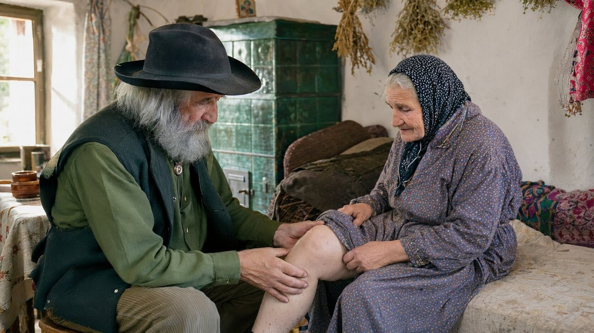
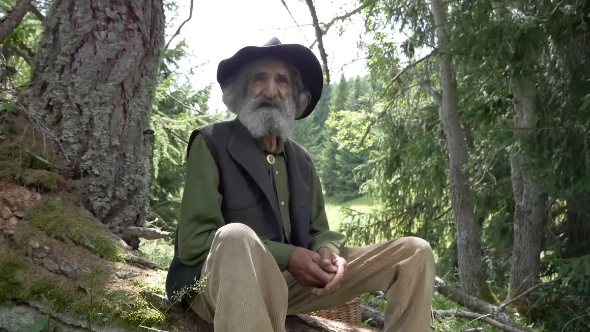
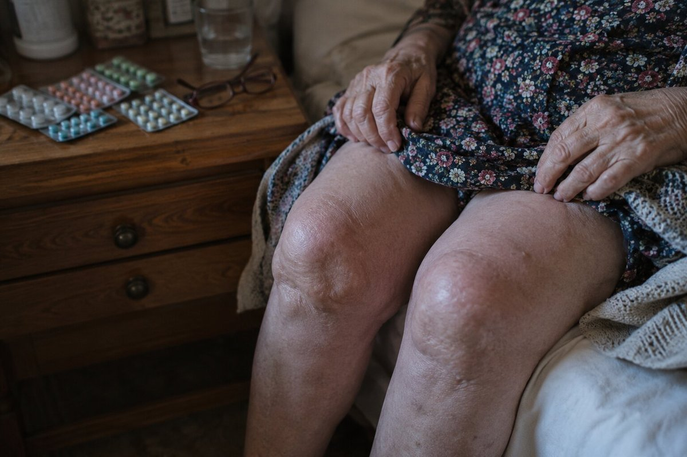
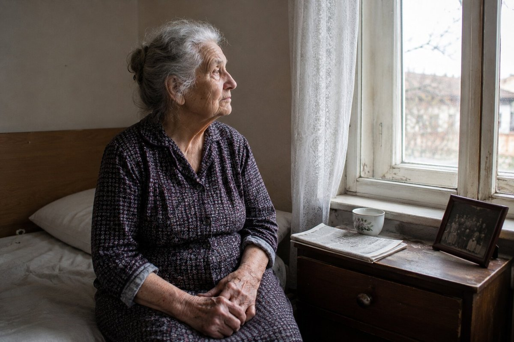
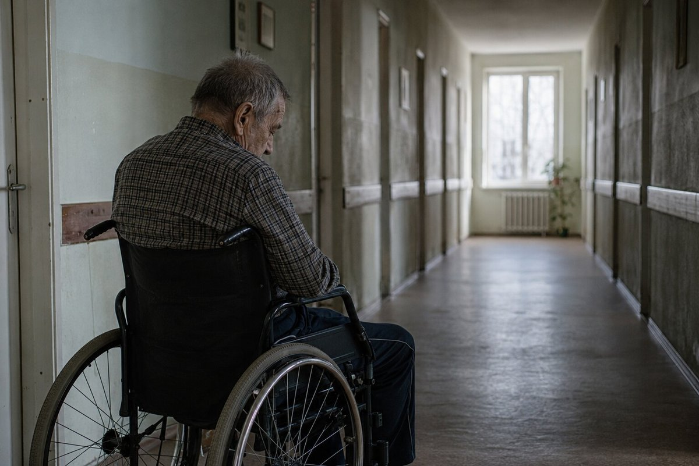
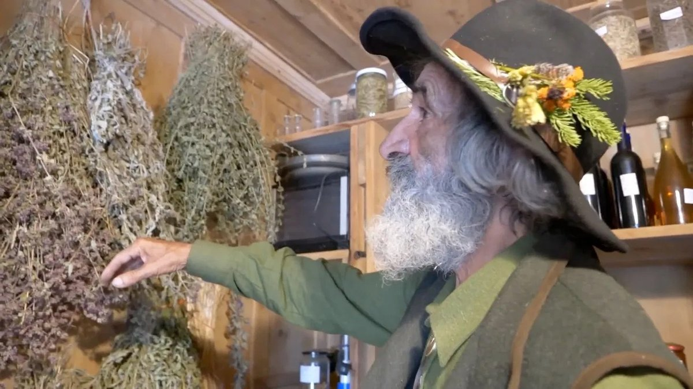
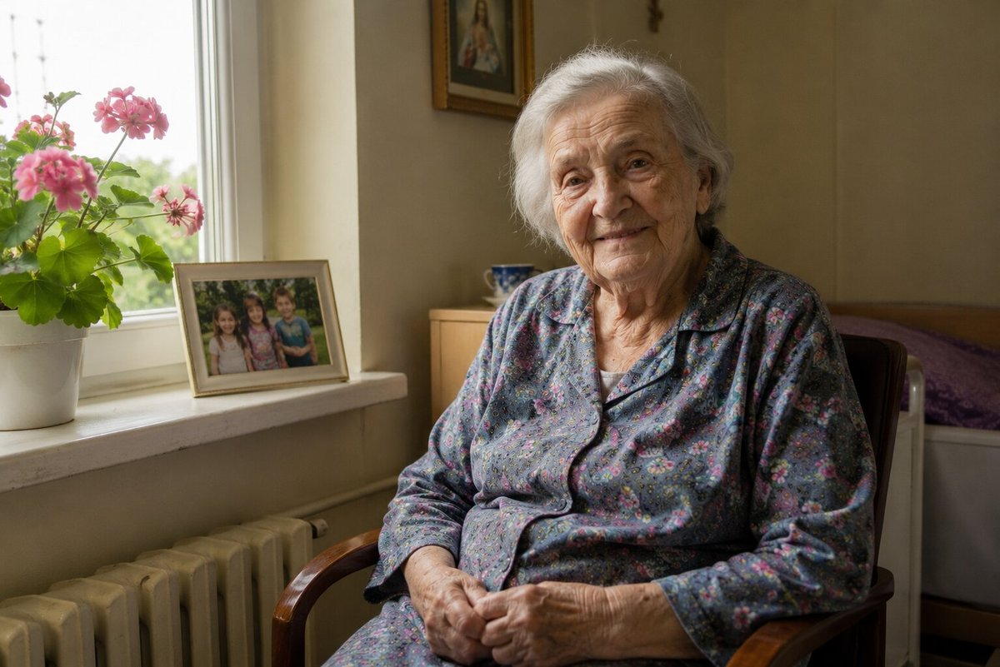
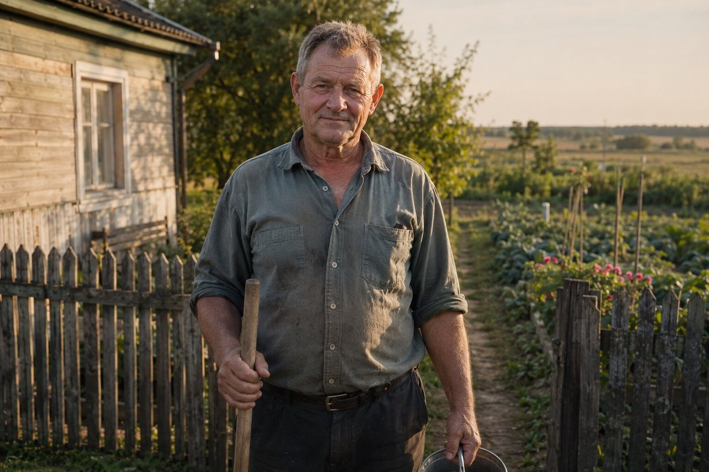
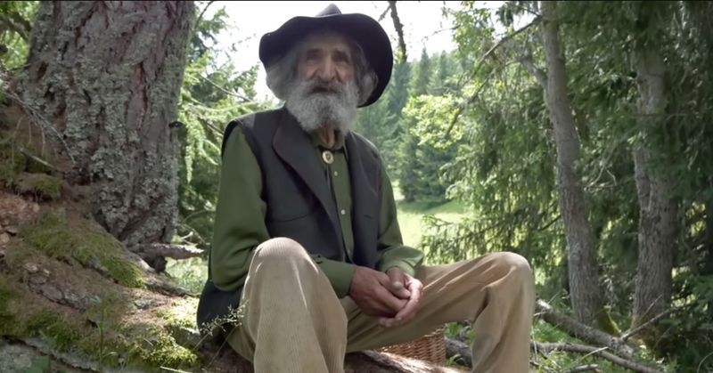

V torek zjutraj smo prispeli v Ribnico na Pohorju, v gozdnate doline na severu. Megla je še vedno visela med vrhovi. Zadnje kilometre smo prehodili peš, ker naprej ni več asfaltne ceste. "Iščete strica Jožeta?" — je vprašala starejša ženska na koncu vasi, z ruto na glavi. "Zavijte levo pri mali kamniti cerkvici. Njegova hiša je pri izviru. Ampak pohitite, ker opoldne gre v hribe nabirat zelišča."
Tako smo našli Jožeta Hribarja — 72-letnega ljudskega zdravilca, ki je vse življenje preživel na Pohorju in ki danes ruši enega največjih tabujev v državi: da za bolečine v sklepih obstaja resnična rešitev. Rešitev, ki ni odvisna od kemičnih tablet, injekcij ali operacij. Temveč od srečanja narave, starodavne modrosti in stoletnega spomina.
V bližnjih krajih — v Ribnici na Pohorju, Slovenj Gradcu, Dravogradu in drugod — strica Jožeta pozna skoraj vsaka družina. Hčere pripeljejo svoje šepajoče očete, da jih pogleda. Žene naročajo tube gela za svoje matere v domovih za starejše. Moški pridejo po dolgih delovnih dnevih, da bi spet lahko hodili. Zdravnik iz občinskega zdravstvenega doma priznava: "Ne znam pojasniti, kaj se dogaja s tem človekom. Ampak moji pacienti res okrevajo."

"Telo ve vse. Treba je le utišati hrup, da slišiš, kar šepeta." Pogovor s stricem Jožetom v srcu Pohorja — v njegovi hiši, kjer s sten visijo snopi posušenih zelišč, na policah pa počivajo stoletja stare knjige
Stric Jože Hribar: "Vsega se spominjam, kot da je bilo včeraj. Zgodaj v svitu, megla je še visela med vrhovi. Sedel sem pred svojo kočo ob ognju in pripravljal izvleček iz iglavcev — takrat še za lastne bolečine. Nenadoma sem zaslišal tihe korake. Pojavila se je ženska v temni obleki do tal, kakšnih šestdeset let. Oči je imela kot stoječo vodo — polne strahu. Sedla je poleg mene na podrto deblo in rekla:
"Stric Jože, prosim vas, rešite mi moža. Moj mož umira. Sklepi se mu vedno bolj zategujejo, kolena so uničena. Zdravniki ne morejo več ničesar storiti. Ne more hoditi, ne more vstati, ne more niti sedeti. Samo leži in joka."
V TISTEM TRENUTKU SEM SPOZNAL: MODROST O ZELIŠČIH, KI SEM JO PODEDOVAL OD SVOJEGA UČITELJA, NI DANA SAMO MENI — TEMVEČ TUDI TEJ ŽENSKI IN NJENEMU MOŽU. TAKRAT SEM SE ODLOČIL, DA JO PONESEM NAPREJ."

Stric Jože govori počasi, včasih z dolgimi premori — kot da vsako besedo posebej tehta. Njegove velike koščene roke počivajo na kolenih. Prsti so mu umazani od smol in korenin, s katerimi dela že petinšestdeset let. Za njim, na steni, visijo posušeni snopi žajblja in kumine. Na policah stojijo kozarci, majhne temne posodice in težka, v usnje vezana knjiga — italijanski prevod "De Materia Medica" iz šestnajstega stoletja, ki jo je podedoval od svojega učitelja.
"Ljudje mislijo, da so bolečine v sklepih naraven del starosti. To je laž. Kolena, hrbet, kolki — to je kot gozd. Če ga dobro čuvaš, živi stoletja. Če ga izčrpavaš in zastrupljaš, v šestih ali osmih letih razpade. Sodobna medicina sklepov ne čuva. Samo uspava bolečino. In vsako leto predpiše več tablet. Vse dokler človek ne pade in si ne zlomi kosti."
"Lekarne ne povedo resnice — ker če bi jo, bi šle v stečaj" Stric Jože Hribar pojasnjuje, zakaj tradicionalna zdravila za sklepe naredijo več škode kot koristi
Stric Jože Hribar:
— Naj vam povem, kaj vidim iz meseca v mesec pri tistih, ki pridejo k meni. Ženska, petinšestdeset let. Že deset let jemlje protivnetna zdravila. Bolečina v kolenu se vsako leto poslabša. Zdaj jo boli še želodec od toliko tablet. Izvidi za ledvice so slabi. Zdravnik predpiše še eno tableto — zdaj za želodec. Nato za ledvice. Koleno pa se medtem razsuva. Hrustanca nihče ne obnavlja. Samo bolečina se uspava — vse dokler se hrustanec ne obrabi do konca.
To je začaran krog: bolečina → tableta → bolečina se vrne močnejša → močnejša tableta → želodec trpi → še ena tableta za želodec → ledvica odpove → sklep pa se medtem razsuva. Nihče ne pove resnice: obstaja druga pot — dati hrustancu tisto, kar potrebuje, in ga pustiti, da se sam obnovi.

Bolečina v kolenu, hrbtu ali kolku po petinštiridesetem letu ni "normalna za leta" — to je znak, da se sklepni hrustanec obrablja in da izginja sinovialna tekočina. Kdor ta znak zaduši s tabletami, počasi in tiho uničuje lastne sklepe.

Protivnetna zdravila samo blokirajo signal bolečine, medtem ko uničevanje tiho napreduje. Brez resnične regeneracije hrustanca sklep na koncu povsem razpade — in takrat ostaneta le dve možnosti: invalidski voziček ali operacija z vstavitvijo endoproteze, ki v Sloveniji stane več kot 5.000 €. Nobena ne vrne pravega življenja.
Stric Jože Hribar:
— Zavedajte se resnosti tega. Pri mnogih, ki pridejo k meni, je hrustanec v kolenu, v hrbtenici ali v kolku uničen med 70 in 90 odstotki. Hodijo kost na kost — če sploh še lahko hodijo. Vsak korak je mučenje. TRADICIONALNE TABLETE HRUSTANCA NE MOREJO OBNOVITI — SAMO PRIKRIVAJO BOLEČINO, MEDTEM KO VSE RAZPADA!
In veste, kaj me najbolj boli v prsih? To, da so ti ljudje sami. Otroci so odšli v Nemčijo, v Švico, v Avstrijo, v Avstralijo. Lekarna jim zdravila prinese enkrat na teden. Zdravnik jih vidi enkrat na leto. Medtem pa tiho razpadajo. Hrbet, kolena, kolki. Čez čas se bojijo že iz hiše, da ne bi padli. Zato delam to, kar delam.
Zgodbe, ki jih ne bom nikoli pozabil — in zgodbe, ki bodo spremenile to, kako gledate na moč narave
Stric Jože Hribar:
— Naj vam povem, koga vidim vsak teden. Ne govorim o statistiki. O ljudeh. O ljudeh z imeni, ki imajo družino, ki imajo svoje zgodbe. O ljudeh, ki jih je medicina že odpisala — narava pa jih še ni odpisala.


To so simptomi, ki jih najpogosteje vidim — in ki jih milijoni ljudi ne jemljejo resno, misleč, da so "samo leta":
- Ostra bolečina v kolenu pri hoji po stopnicah navzgor ali navzdol — ali pri vsakem gibu;
- Jutranja okorelost — telo je "leseno", se 30–60 minut po prebujanju ne premakne;
- Kronična bolečina v hrbtu — ne morejo se skloniti, ne morejo vstati iz postelje;
- Otekline v kolenih, gležnjih ali prstih;
- Škripanje in pokanje v sklepih ob vsakem gibu;
- Bolečina v kolku, ki se širi v stegno — ne morejo prehoditi več kot 50 metrov;
- Deformirani, zavozlani prsti — ne morejo prijeti predmetov;
- Mravljinčenje v nogah ali rokah — znak diskopatije ali utesnjenega živca;
- Občutek "noža" v križu pri vzravnavanju hrbta;
- Sključen hrbet, skrivljena drža — napredujoča kifoza;
- Nočna bolečina, ki ne pusti spati — zbujajo se 4–5-krat v noči;
Vsak od teh simptomov je alarm. In po 45. oziroma 50. letu vodi njihovo zanemarjanje k enemu samemu koncu: POPOLNA NEGIBNOST, INVALIDSKI VOZIČEK, POPOLNA ODVISNOST OD DRUGIH — IN V MNOGIH PRIMERIH NAMESTITEV V DOM ZA STAREJŠE, KAMOR OTROCI PRIDEJO LE ENKRAT NA LETO.
Vsak dan, ki ga preživite z nezdravljenimi sklepi, vas približa trajni negibnosti! Tisoči slovenskih upokojencev so končali v domovih za starejše prav zato, ker bolečine niso jemali resno — ali pa so jemali samo tablete, ki problema niso rešile. Ukrepajte takoj — zaradi sebe ali zaradi svojih najbližjih — preden bo prepozno!
"Moj učitelj me je naučil: za vsako bolečino ima narava odgovor — če veš, kje iskati" Kako je stric Jože Hribar našel formulo, ki jo danes uporablja več kot 1700 ljudi iz vasi okoli Pohorja
Stric Jože Hribar:
— Naslednji dan sem šel pogledat moža tiste ženske. Hiša je bila v polmraku. Človek je bil videti kot posušena goba — suh, rumenkast. Telo je bilo še toplo, pogled pa se je že poslavljal od sveta. Sedel sem k njemu, ga prijel za roko in vprašal: "Koliko let že živiš s to bolečino, brat?" Molčal je. Solza mu je stekla po licu. "Devetnajst let," je zašepetal. "In nihče ne ve, kako bi mi pomagal. Vsi samo predpisujejo zdravila."
Takrat sem se spomnil starega zapisa. Leta prej sem v zapuščini svojega učitelja našel pozabljen zvezek — italijanski herbarij iz šestnajstega stoletja, prevod "De Materia Medica" velikega Dioskorida. Na eni strani je pisalo: "Notranji ogenj telesa krade sklepom njihovo vlago in prožnost. Le tisti, ki pozna solzo drevesa — smolo, ki hrani spomin človeškega tkiva — jim lahko vrne življenje kostem."

Seveda to ni bila znanstvena razlaga — temveč modrost, ki se je prenašala iz roda v rod. Ampak takrat še nisem vedel, da bo tisti dan začetek treh let dela. Treh let, v katerih sem dediščino svojih učiteljev in darove gozda združil v navadne tube gela, narejene ročno — ki lahko obnovijo hrustanec od znotraj, brez jemanja kemičnih tablet.
Kaj vsebuje gel, ki ga dela stric Jože:
- Smola iglavcev s Pohorja — solza drevesa Smola iglavcev — ki jo je moj učitelj imenoval "solza drevesa". Tradicionalna ljudska medicina jo že stoletja uporablja pri bolečinah v sklepih. Naravno protivnetno sredstvo, ki ustavi razkroj hrustanca in prebudi regeneracijo
- Glukozamin in hondroitin — v naravni obliki Opeke hrustanca — starodavna zaloga narave, ki jo celice prepoznajo in uporabijo
- Hialuronska kislina — v obliki majhnih molekul Sklepu vrne vlago — tisto, kar je narava namenila človeškemu telesu in kar mu je odvzelo vnetje
- Kolagen tipa II in MSM Krepita vezi in kite okoli sklepa — naravno zaščitno mrežo, ki z leti slabi
- Kafra in gorska arnika Takojšnje olajšanje bolečine in otekline — kot je govoril moj učitelj: "duh drevesa, ki gasi ogenj"
Gel vsebuje še 14 drugih redkih rastlinskih izvlečkov, ki jih stric Jože in njegovi pomočniki nabirajo na pobočjih Pohorja v obdobju šestih tednov — vsako leto, samo enkrat na leto, ko so zelišča v polni zrelosti. Razmerja se je stric Jože naučil od svojega učitelja in vsak korak opravi z lastnimi rokami.
Tako se je rodil gel Nautubone — ročno narejen, z najboljšimi zdravilnimi zelišči s Pohorja
Stric Jože Hribar:
— Ne rodi se v laboratoriju. Rodi se v moji delavnici, tu v vznožju hriba. Smolo iglavcev nabiramo jaz in moji pomočniki — v starih smrekovih gozdovih, na najvišjih grebenih Pohorja, kjer drevesa že stoletja izločajo svoje solze. Tudi druga zdravilna zelišča nabiramo tu, na pobočjih. Nabiranje nam vzame šest tednov, ker je treba vsako zelišče odrezati v trenutku njegove zrelosti. Nato gel izdelamo v majhnih serijah in ga ročno pakiramo. Na dan lahko naredimo največ 70 tub gela — ne več, ker bi to pokvarilo kakovost.


Osnova gela je 200 let stara formula, ki mi jo je zapustil moj učitelj. Povedano s sodobnim znanstvenim izrazjem: kombinacija koncentriranih rastlinskih izvlečkov omogoča, da se učinkovine vsrkajo v telo in po krvi pridejo naravnost do sklepne ovojnice, kjer se razkraja hrustanec. Učinek je petkrat močnejši od katerega koli dodatka iz lekarne, ker narava natanko ve, kako sodelovati s človeškim telesom. Prednost gela pred kremami in losjoni pa je v tem, da deluje od znotraj — hkrati doseže vse sklepe: kolena, hrbet, kolke, roke, vrat — ne da bi bilo treba karkoli mazati. Za starejše ljudi, ki živijo sami, to pomeni udobje in samostojnost.
Nautubone ni konkurenca. Noče tekmovati. Hoče samo pomagati. Vsaka sestavina — v natančnem razmerju — prebudi regeneracijo hrustanca, obnovo sinovialne tekočine in umiritev vnetja. To je edino sredstvo, ki deluje na celični ravni in hkrati doseže vsa prizadeta mesta — kolena, hrbet, kolke, roke, vrat — od znotraj. In najpomembneje: deluje tudi pri 70, 80, 85 letih! Moji prvi pacienti so bili najstarejši — ljudje, ki so jih vsi že odpisali.
Stric Jože Hribar:
— Prva ženska, ki sem ji dal ta gel, štiri mesece ni vstala iz postelje. To je bila teta Micka iz Ribnice na Pohorju. Tretji dan je sama prišla v kuhinjo in mi skuhala kavo. Oba sva jokala. Ona — ker je prvič po mnogih letih ni bolel vsak gib. Jaz — ker sem v tistem trenutku spoznal, da dediščina mojega učitelja živi. Da vsa ta leta nisem delal zaman.
Nautubone vam na štiri načine pomaga vrniti veselje do hoje — v katerikoli starosti
Štiri glavna delovanja gela Nautubone:
- Odprava bolečine in vnetja Že v prvih 30–45 minutah po nanosu kombinacija smole iglavcev, arnike in kafre zmanjša bolečino in vnetje. Ne blokira živčnega signala (kot navadne kemične tablete) — temveč umiri sam izvor vnetja, tam, kjer se težava začne.
- Obnova hrustanca Glukozamin, hondroitin in kolagen tipa II pridejo do sklepne ovojnice in prebudijo celice hrustanca (hondrocite), ki začnejo tvoriti novo hrustančno tkivo. Ta proces se začne po 3–5 dneh redne uporabe.
- Obnova sinovialne tekočine Hialuronska kislina iz majhnih molekul se vsrka v telo in nadomesti sinovialno tekočino — naravno "mazivo" sklepa. Zahvaljujoč temu se kosti ne drgnejo več druga ob drugo, gibanje pa postane lahko in neboleče.
- Dolgoročna zaščita in preventiva MSM in mineralni kompleks krepita vezi in kite okoli sklepa ter preprečujeta prihodnje poškodbe. Po 30–60 dneh uporabe sklep dobi stabilno zaščito, ki traja več mesecev.
Zgodbe, ki jih stric Jože pripoveduje osebno — o ljudeh, ki spet hodijo
Stric Jože Hribar:
— Naj vam povem o nekaterih izmed tistih, ki jih vidim vsak teden. O ljudeh, ki jim ni nihče dajal možnosti — ne zdravniki, ne družina. O ljudeh, ki spet hodijo.

Teta Micka, 82 let, Ribnica na Pohorju. Štiri mesece ni vstala iz postelje. Tretji dan uporabe Nautubone je naredila prve korake sama. Po 30 dneh gre na dvorišče brez pomoči. "Tega ni pričakoval nihče. Niti jaz sama. Stric Jože pride enkrat na teden. Samo pogleda me, se dotakne kolena in prikima."
Rezultat po 30 dneh: Samostojna hoja, jutranja okorelost je izginila, bolečina je padla z 9/10 na 2/10.
Stric Risto, 70 let, upokojeni rudar iz Trbovelj. Diskopatija, išias, ni mogel stati dlje kot 5 minut. Po 6 tednih — vrnil se je na svoj vrt, obdeluje dve gredi na dan. "Mislil sem, da je moj hrbet za vedno uničen. Bil sem pripravljen sprejeti življenje invalida. Zmotil sem se. Z gelom strica Jožeta se počutim dvajset let mlajšega."
Rezultat po 45 dneh: Ostra bolečina v križu je izginila, gibljivost se je vrnila, prvič po 4 letih je globoko prespal vso noč.Zakaj Nautubone ni v lekarnah? In kako ga dobiti?
Stric Jože Hribar:
Po pravici povedano, izdelava Nautubone je težak in počasen postopek. Materiali so redki — smolo iglavcev je mogoče nabirati samo v starih smrekovih gozdovih, druga zelišča ročno na pobočjih hriba, imamo pa le šesttedensko okno na leto, ko so zelišča povsem zrela. Na dan lahko v delavnici strica Jožeta naredimo največ 70 tub. Vsem povpraševanjem ne moremo ustreči.
Minila bosta še vsaj 2–3 leta, preden bo Nautubone prišel v lekarne. Do takrat je na voljo na celotnem ozemlju države samo prek spleta, v podpornih programih, ki se odprejo dvakrat na leto. Popust lahko doseže 50 % — kar je še posebej pomembno za slovenske upokojence s podeželja, ki živijo s pokojnino okoli 600 € na mesec.
Ko so v lekarnah izvedeli, da ti geli res delujejo — celo pri napredovali artrozi in diskopatiji — so zanje hoteli zaračunavati 129 EUR za tubo. Rekel sem jim: "Ne delam za denar. Moj učitelj mi je zastonj dal vse, kar je vedel. Slovenskih upokojencev ne bom oropal." Lekarne so me zavrnile. Nekaj dni pozneje so me začeli obiskovati ljudje z zdravstvene inšpekcije. Zahtevali so dokumente. Hoteli so me kaznovati. A nisem odnehal. Takrat se je v mojem življenju pojavil mladenič iz Ljubljane. Njegovo mater sem tri leta prej pozdravil hude artroze kolena — nanj in na njegovo mater sem že zdavnaj pozabil. Zdaj se je vrnil. Rekel je: "Stric Jože, vi tu v hribih delate čudeže s svojimi rokami. Ampak v Sloveniji je na tisoče ljudi, ki trpijo in ki nikoli ne bodo prišli do sem. Dovolite mi, da pomagam." Uredil je, da se geli, narejeni z mojim orodjem, pakirajo v čisti delavnici v sterilne tube, da jih kurirska služba dostavlja po vsej državi in da majhna ekipa odgovarja na telefone. Jaz jih še naprej delam tu, v svojem tempu. On skrbi samo za to, da pridejo do tistih, ki jih potrebujejo.
Prosim vas: NE ZAMUDITE TEGA PROGRAMA! Ne samo zaradi sebe — temveč tudi zaradi staršev, dedkov in babic, bližnjih sorodnikov, ki morda trpijo v tišini. Ali zaradi tistih, ki so že v domovih za starejše, sami, in ki jim nihče ničesar ne pošlje. Bodite tisti, ki naredi razliko.
Za naročilo uporabite spodnji obrazec.
Zadnja priložnost, da letos dobite Nautubone — zase ali za nekoga bližnjega, ki trpi v tišini

Stric Jože Hribar:
— Rezerviral sem 20 000 tub izključno za bralce tega portala. Vsak slovenski državljan, starejši od 40 let, lahko dobi popust 50 %, vendar se program zaključi .
Ne čakajte, dokler se ne boste več mogli povzpeti po stopnicah. Dokler vas kolena dokončno ne izdajo. Dokler se vam hrbet ne zablokira. In predvsem — ne čakajte, dokler ne postanete "breme" za najbližje. Ena kura prebudi naravno regeneracijo hrustanca — in od tistega trenutka telo dela naprej samo. Ni potrebe po doživljenjskem zdravljenju, ni kemičnih tablet, ni bolečine, ki se vrača. En korak, in vaše telo se bo spomnilo, kako se živi.
Vpišite svoje ime in telefonsko številko. Svetovalec vas bo poklical, izbral ustrezen program in uredil dostavo v 2–3 dneh s kurirsko službo naravnost na vaš naslov po vsej Sloveniji.
Z ljubeznijo in skrbjo — stric Jože Hribar. Skrbite za svoje najbližje. Morda je edino, kar potrebujejo, to, da vedo, da niso pozabljeni.
Posodobljeno: : Glede na izjemno zanimanje se zaloge lahko izčrpajo hitreje, kot je predvideno! Danes — — je zadnji dan programa ali do izčrpanja zalog.
Pozor! Ne zapirajte in ne osvežujte strani, sicer bo vaša tuba Nautubone ponujena drugi osebi!
V ponudbi lahko sodelujete — vaše mesto je rezervirano: Nº 19 974
naravnost na vaš navedeni naslov

KOMENTARJI
Bojana Zupančič
Pred 2 urama
Jokala sem, ko sem to brala. Mama ima 76 let, že dve leti je v domu za starejše v Radljah ob Dravi — prav zato, ker so jo kolena izdala, jaz pa zanjo nisem mogla skrbeti. To je moja največja krivda. Naročila sem ji Nautubone. Upam, da ni prepozno. Daj Bog, da bo delovalo.
Vesna Kovačič
Pred 5 urami
Prejšnji petek sem dobila Nautubone. Zjutraj in zvečer nanašam gel. V 5 dneh je bolečina močno popustila, po stopnicah lahko hodim navzdol, ne da bi se držala za ograjo! Zgodba o stricu Jožetu me je prepričala, da naročim. Izjemen človek, res.
Silva Petrič
Pred 8 urami
Imam 69 let. Štiri leta sem se mučila s hrbtom — diskopatija in išias. Nisem se mogla niti skloniti, da bi si zavezala čevlje. Zdravniki so mi predpisali protivnetna zdravila, ki so mi uničila želodec. Po 3 tednih z Nautubone je bolečina skoraj izginila. Sama hodim po tržnici, kuham. Dobila sem nazaj svoje življenje, hvala Bogu.
Gorazd Kralj
Pred 12 urami
Delam 10 ur na dan v pisarni v Ljubljani. Hrbet in vrat se ne odzivata več. Zdravnik je rekel: "Ali zamenjate službo ali operacija." Izbral sem gel Nautubone. Po 5 tednih — niti sledu o bolečini. In ogromno spoštovanje do strica Jožeta — v svetu, kjer vsi hočejo denar, on hodi peš do pozabljenih starcev v hribih.
Lidija Novak
Pred 14 urami
Po pravici povedano, nisem verjela. Toliko stvari se oglašuje na internetu, da sem izgubila zaupanje. To besedilo sem prebrala samo zato, ker moja tašča ne more hoditi, jaz pa sem obupana. Naročila sem z mislijo "če ne deluje, izgubim 39 €". Minili so 3 tedni. Tašča je včeraj sama vstala s fotelja! Moja tašča! Ki ni vstala 8 mesecev. Zdaj ne vem, kaj naj rečem. Pišem za tiste, ki dvomijo tako kot jaz.
Damjan Mihelič
Pred 16 urami
Naročil sem 3 tube — zase (kolena), za ženo (roke, artritis) in za ženinega očeta v domu za starejše. Ne moremo ga pogosto obiskovati, vsaj pošljemo mu to, kar potrebuje. Upam, da bo tudi njemu pomagalo. Hvala za ta članek.
Danica Rozman
Pred 18 urami
Sprašujem se, ali naj naročim za očeta. Že 3 leta je v domu za starejše — kolena sploh ne delajo več. Vdal se je, komaj govori. Mislite, da lahko Nautubone pomaga tudi pri 78 letih?
Marjana Golob
Pred 17 urami
Danica, moja mama ima 82 let! Hud artritis v obeh kolenih, ni vstajala iz postelje. Že 2 meseca uporablja Nautubone — zdaj sama hodi na dvorišče. Ne pretiravam. In najlepše: ko sem jo obiskala, me je čakala stoje pri vratih! Skupaj sva jokali. Naroči brez oklevanja, tvoj oče si zasluži priložnost.
Zoran Sever
Pred 15 urami
Danica, naročite brez skrbi. Imam 78 let, bil sem korak od invalidskega vozička — koksartroza. Nautubone me je v 2 mesecih postavil na noge. Dobesedno. Oče si zasluži več kot dom za starejše.
Helena Anžel
Pred 20 urami
En teden nanašam gel na kolena in križ. Zjutraj nisem več "lesena palica". Lahko se sklonim, lahko vstanem brez "joj". Naročila sem tudi za sosedo, ima 73 let in živi sama, pri hoji se drži sten.
Suzana Verbič
Pred 1 dnevom
Priznam — ta članek sem brala z nezaupanjem. Imam izkušnje z izdelki, ki obljubljajo vse. Ampak zgodba o stricu Jožetu me je osvojila in odločila sem se poskusiti, ker me kolena mučijo že 5 let. Po enem mesecu — lahko kopljem na vrtu! Ne pravim, da je čudež. Pravim, da deluje. Dajte mu priložnost.
Stanka Tomšič
Pred 1 dnevom
Imam 82 let. Lani nisem mogla niti sama na stranišče. Otroci so govorili, da me bodo dali v dom za starejše. Poskusila sem Nautubone — brez velikih upov. In DELUJE!!! Hodim sama, oblačim se sama, sama grem do vrat. Otroci doma za starejše ne omenjajo več. To je moja največja sreča.
Branko Pavlin
Pred 1 dnevom
Moja žena ni mogla niti po stopnicah dol. Držala se je za steno in jokala od bolečine. Mislil sem, da jo izgubljam — ne zaradi bolezni, ampak zaradi obupa. Naročil sem Nautubone s popustom. Po 4 tednih je včeraj sama šla na tržnico in se vrnila z rožami. Z rožami! Hvala iz srca.
Jasna Kržišnik
Pred 1 dnevom
Naročila sem štiri tube — za mamo (v domu, kolena), za očeta (v domu, hrbet) in dve zase (roke, artritis v prstih, nisem mogla pisati). Zgodbe iz članka so se me dotaknile. Nimam več izgovorov.
Slavica Gorjup
Pred 2 dnevoma
Dobila sem Nautubone — kurir ga je dostavil v 2 dneh! Gel sem že izročila mami v domu. V srcu imam upanje. Ta članek pošiljam tudi osebju — morda pokličejo strica Jožeta.
Igor Lazar
Pred 2 dnevoma
Nautubone sem iskal po lekarnah — nimajo ga. Rekli so, da ga je treba naročiti na tej strani. Upam, da je še na voljo. Moj ded ga nujno potrebuje — ima 81 let in ne more več hoditi.